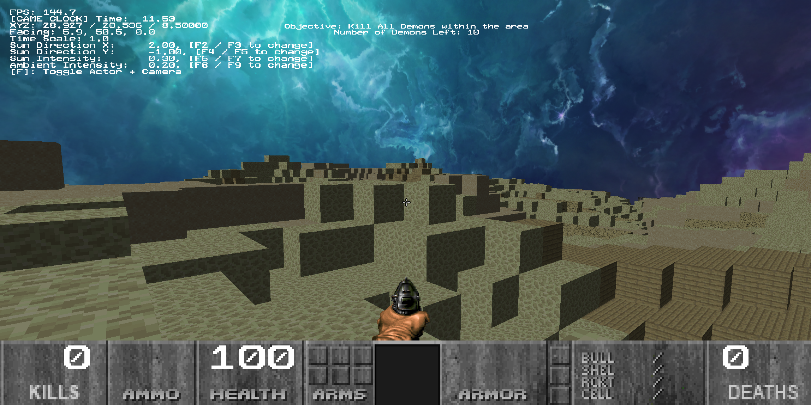
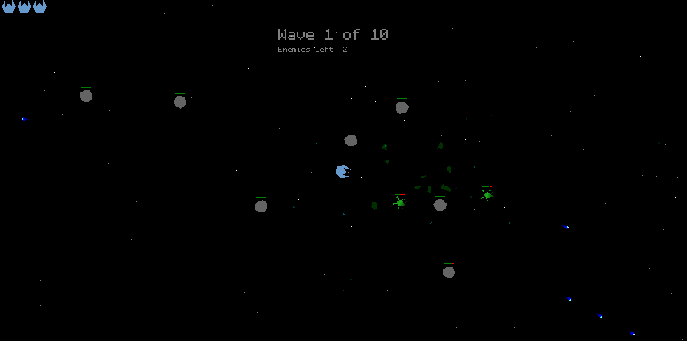
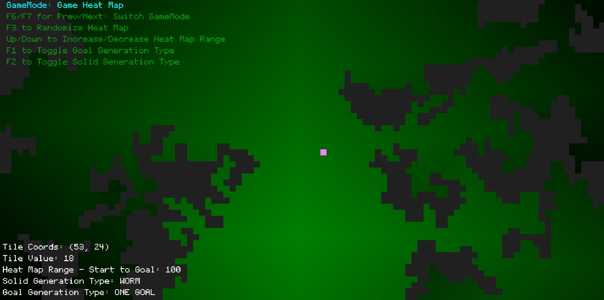
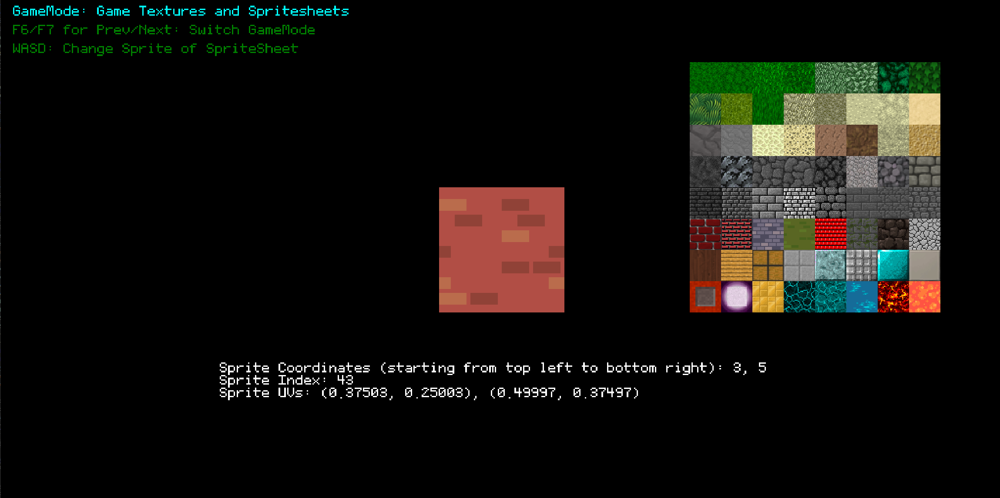

Collaborative UI-Minded Programmer
Partners with designers, artists, programmers, and QA to turn gameplay requirements into readable, player-facing UI.
A focused Game Developer specializing in creating intuitive architectural interfaces, highly scalable development tool logic, adaptable gameplay execution loops, and crisp technical designs.
Detailed structural features, core engine implementation loops, and technical tool tracking.
GeoDash: Simple 2D Rhythmic Platformer
An individual development sandbox slot heavily inspired by the architecture of Geometry Dash. The primary development vector focuses tightly on implementing core level-editor node hierarchies, structured canvas-editor snapping frameworks, and fine-tuning rigorous collision/response physics ticks. Built meticulously to test custom mechanics loops and visual coordinate mapping tools.
Doomenstein: 3D First-Person Shooter Custom Engine
A classic 3D pipeline simulation engineered inside a custom C++ game engine written entirely from scratch. This engineering execution handles raw system layer setups, including manual pointer tracking memory blocks, robust actor systems, complex custom AI logic paths, real-time bounding volume AABB collision routines, line-of-sight raycasts, native split-screen multiplayer viewport arrays, immersive 3D spatial sound tracking, operational map objective flows, and a localized secure leaderboards stack data layer.


Starship: 2D Vector Space Arcade Custom Engine
A vector-feel execution environment crafted explicitly to explore immediate gameplay loops and kinetic controller feel. By engineering direct screen space rendering coordinates and drawing graphic shapes dynamically into frame arrays, the workspace decouples mechanics testing entirely from finished 2D/3D texture sets, allowing rapid verification of physics variables and custom firing tracking.


Visual Test Simulations: Geometric Math Framework & Diagnostics
An expandable in-engine visual diagnostics utility configured to validate intricate mathematical expressions and convex hull spatial collisions. Features custom formatting and bitmap layout mechanisms built entirely on standalone architectural principles.


Cross-discipline pipeline integration, version tracking metrics, and studio production habits.
I take comprehensive ownership of UI architecture layout assemblies from initial visual design passes down to precise data-binding hooks. I map clean interaction matrices to ensure layouts remain lightweight, responsive, and completely intuitive for players.
I proactively break down large engine assignments into granular, scannable sub-tasks within our team tracking systems. This meticulous milestone definition keeps delivery dates predictable and minimizes sprint blockages.
I focus intensely on being straightforward and easy to work with across all departments. I loop in technical leads early when tackling unfamiliar source files, process peer review feedback constructively without friction, and actively help fellow developers to unblock tasks.
To ensure non-programmers can configure UI elements with confidence, I document critical data keys explicitly so that artists and designers can iterate on visual layers safely without risking unexpected compile breakages.
Managed core interactive architectural structures using advanced Unreal Engine UI programming toolsets. Specialized heavily in configuring robust decoupled application models via the CommonUI ecosystem.
Personally engineered complex nested Common Activatable Widgets to route dynamic gamepad and cursor overrides effortlessly, while implementing full localized gameplay state pause flows and robust interactive configuration sliders. Structured tracking requirements clearly across collaborative studio teams via Jira ticket sprints, managing rigorous branch operations with Perforce control streams.
In a team of 15 multidisciplinary volunteers, provided Quality Assurance (QA) testing and core gameplay loop verification across multiple complex game modes, supporting both critical backend systems and frontend user experience for a high-scale multiplayer gaming network.
On the backend architecture layer, contributed to the implementation of friends commands using Bungiecoord and systematically validated operational testing loops for the weekly Black Market shop systems. On the frontend and level design pipelines, structured and balanced comprehensive parkour progression environments spanning 14 progressive levels, ensuring scaling jump difficulty, precise mechanics execution, and seamless visual environment decoration to optimize immersion. Managed tracking deliverables via GitHub version control and Miro boards to accelerate release velocity, driving a 300% player count surge on release day.
Collaborated closely inside a 4-person multidisciplinary engineering cell to deliver a polished 2D pixel-art puzzle platformer over an intense 3-month production sprint lifecycle. Took personal ownership of primary gameplay controllers, system juice, and mechanic polish.
Designed and coded the responsive player character controller from scratch inside Unity, establishing tight physics-based motion routines, robust spatial collision checks, and clean animation state graph transitions. Authored core puzzle gameplay loops including interactive movable crates, physics platforms, pressure-pad gated systems, and unified camera screen fade managers. Documented technical guidelines inside the master Game Design Document (GDD) and captured operational captures to anchor production trailer marketing cycles.
Direct communication assets, credentials, and digital resume indexes.
Actively searching for introductory engineering roles within scalable workspace environments. Core engineering targets include:
I am a current Guildhall student pursuing a master’s degree in game design specializing in Software Development at Southern Methodist University (SMU). I have acquired my bachelor’s degree in computer science at the University of Texas at Dallas. My current work is focused on User Interfaces and Gameplay Systems with an emphasis on User Experience and accessibility.
Part of my passion to pursuing a dream of mine is inspired by two games that I have played throughout my life: Geometry Dash and Minecraft. While different in gameplay, the level designing system was what intrigued me to delve deeper in the frameworks and the backend of how games are developed.
Outside SMU Guildhall, I enjoy playing the piano as it has been a hobby of mine for nearly my entire life (23+ years and counting). I love to arrange music, whether it be improvising a favorite song of mine or just mindlessly creating unique patterns and tunes while I play around. Basketball is another hobby of mine; while I’m not the greatest, it’s always good to put in some competition whether it be head-to-head or team vs team. I also enjoy reading books that keep me motivated despite adversity that comes around (my favorite is The Complete 101 Collection by John C. Maxwell).
Partners with designers, artists, programmers, and QA to turn gameplay requirements into readable, player-facing UI.
Documents UI and Blueprint systems so teammates can understand, maintain, and safely iterate on implementation.
Breaks down tasks, communicates blockers early, and keeps work aligned with milestones using Jira, Miro, Perforce, and GitHub.
Builds systems with attention to usability, input flow, visual feedback, progression clarity, accessibility, and readability.
Unreal Engine 5.7.1-5.7.4, Blueprint, Common UI, UMG, Perforce, Miro, Jira
Unity, C#, Visual Studio 2022, Perforce
Receipt and Control Operations, Document Retention Unit, employee training
C++, Custom Game Engine, Visual Studio 2022, Perforce
Java, Gradle, Bukkit/Paper API, SQL, GitHub Actions
Java, Gradle, SQL, GitHub, Miro, Minecraft
Southern Methodist University - SMU Guildhall
Master’s Degree in Interactive Technology - Software Development, Class of 2027
The University of Texas at Dallas
Bachelor of Science in Computer Science, Aug 2019-May 2023